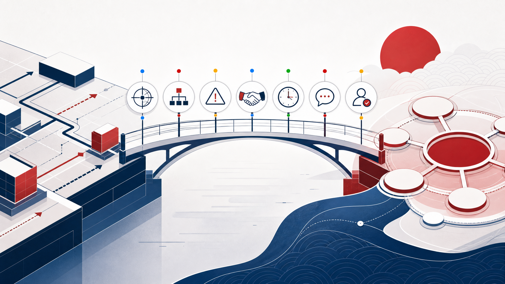

US framing: Hofstede (1984); Hall (1976); The Culture Factor Group (n.d.).
2 Apply models to home culture
US model profile: explicit, individual, action-oriented.
Lower hierarchy / lower uncertainty avoidance
Managers may expect accessible debate, individual ownership, and acceptable experimentation.
Low-context communication
Meaning is expected in direct words, clear asks, written commitments, and action items.
Universalist + achievement logic
Rules, performance, expertise, and specific tasks often carry the argument.
Self-expression / voice
Managers may assume speaking up, direct feedback, and visible autonomy are positive.
Sources: Hofstede (1984); Hall (1976); Trompenaars & Hampden-Turner (1997); World Values Survey Association (n.d.).
3 Host culture
Host culture: Japan. Same sector, different social operating system.
Japan is not treated as a stereotype. The model-based expectation is stronger context sensitivity, hierarchy plus consensus, higher uncertainty avoidance, long-term orientation, and more restrained public disagreement.
Sources: Hofstede (1984); Hall (1976); The Culture Factor Group (n.d.).
4 Apply models to host culture
Japan model profile: context, consensus, control of uncertainty.
High uncertainty avoidance
Prepare details, reduce ambiguity, protect quality and reputation before launch.
High-context signals
Silence, hesitation, indirect language, seating, and prior alignment carry meaning.
Status + relationship context
Rules matter, but implementation is shaped by role, obligation, and face.
Order / restraint / voice balance
Autonomy and expression are balanced with harmony, role, and institutional order.
Operational gap: risk, time, hierarchy, and public expression.
USJapan
Power distance
40 / 54
Uncertainty avoidance
46 / 92
Achievement
62 / 95
Long-term orientation
26 / 88
Indulgence
68 / 42
Classic 6D training values are used as model indicators, not personality predictions (Hofstede, 1984; The Culture Factor Group, n.d.; Taras et al., 2010).
Interactive vote Model diagnosis
Which model predicts the biggest first-month risk?
Vote options are grounded in the four required models.
5 Comparison · Hall
Same sentence, different signal strength.
US low-context reading
“This may be difficult” can sound like a manageable obstacle.
Japan high-context reading
It may signal serious reservation without forcing direct refusal.
Manager translation
Ask privately: “What concerns should we resolve before moving forward?”
Sources: Hall (1976); Nishimura et al. (2008).
Interactive check Hall + Hofstede
A senior client stays silent after your platform recommendation. What now?
High-context communication and hierarchy/risk sensitivity support private concern-handling (Hall, 1976; Hofstede, 1984).
5 Comparison · Trompenaars
The friction is not policy vs no policy. It is policy plus context.
Click each move into the better model bucket: “Global policy says launch.”“Who must be aligned before launch?”“The KPI owner decides.”“How do we preserve face while correcting risk?”
Universalist / specific reflex
Particularist / diffuse adaptation
Sources: Trompenaars & Hampden-Turner (1997); Smith et al. (2002).
5 Comparison · WVS map
WVS lens: voice and autonomy must be channelled, not assumed.
Both cultures are modern advanced economies. The model contrast is how self-expression, authority, trust, and order are balanced in business settings.
Room check: how safe would public disagreement feel in this meeting?
5/10

Sources: World Values Survey Association (n.d.); Beugelsdijk & Welzel (2018).
6 Problem areas from the models
Problem areas are model-derived, not anecdotal.
Pilots feel under-controlled
High uncertainty avoidance makes vague test-and-learn language risky.
Agreement is misread
Indirect concern, silence, or deferral is treated as consent.
Policy is socially clumsy
Universal rule logic ignores role, relationship, and face.
Voice channel is wrong
Open disagreement is requested in a public hierarchy-sensitive setting.